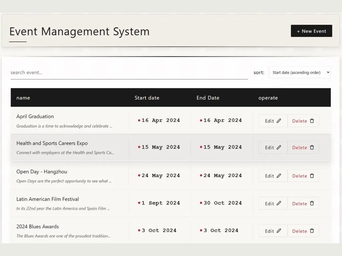
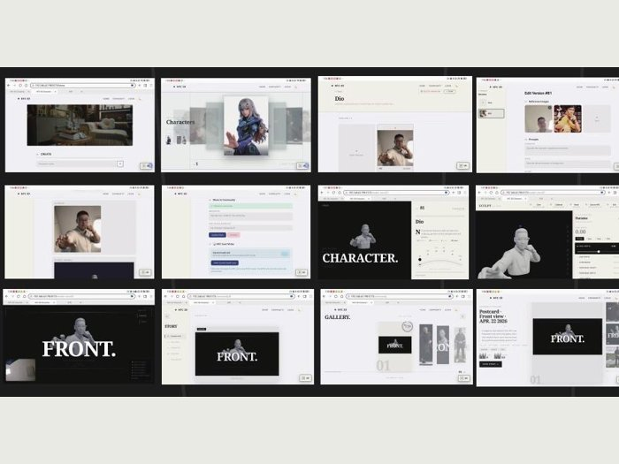
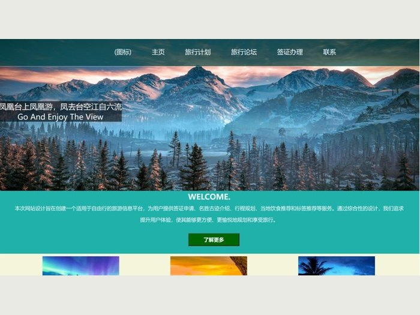

Personal Learning Workbench个人学习平台
JavaScript interfaces, Python services, SQLite and editable programming notebooks.
Selected application screenshots and website designs. Open each card for details, videos and available source. / 点击图片查看项目、视频或源码。
JavaScript interfaces, Python services, SQLite and editable programming notebooks.

Event list, search, date sorting and create/edit forms.

Student and courier interface/service design.

WordPress website, page composition and full walkthrough.

Character generation, interactive editing and community workflows.

Destinations, accommodation, reviews and itineraries.